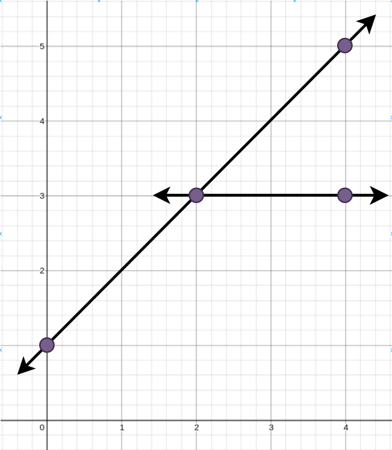
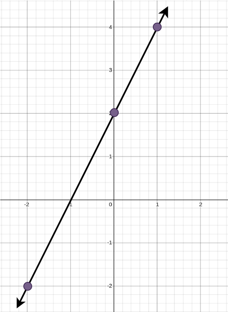

| Category | Difficulty | Likes | Dislikes |
|---|---|---|---|
| Algorithms | Medium | 75 | 14 |
array | hash-table | math | dynamic-programming | backtracking | bit-manipulation | geometry | bitmask
morgan-stanley
You are given an array points where points[i] = [xi, yi] represents a point on an X-Y plane.
Straight lines are going to be added to the X-Y plane, such that every point is covered by at least one line.
Return the minimum number of straight lines needed to cover all the points.
Example 1:

Input: points = [[0,1],[2,3],[4,5],[4,3]]
Output: 2
Explanation: The minimum number of straight lines needed is two. One possible solution is to add:
- One line connecting the point at (0, 1) to the point at (4, 5).
- Another line connecting the point at (2, 3) to the point at (4, 3).Example 2:

Input: points = [[0,2],[-2,-2],[1,4]]
Output: 1
Explanation: The minimum number of straight lines needed is one. The only solution is to add:
- One line connecting the point at (-2, -2) to the point at (1, 4).
Constraints:
1 <= points.length <= 10points[i].length == 2-100 <= xi, yi <= 100points are unique.